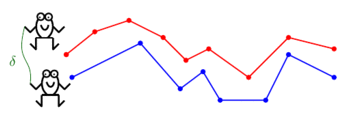

Fréchet Distance Library
The Fréchet distance is a useful and well-known similarity measure for polygonal curves.
It is generally described as follows; Consider a person and a dog connected by a leash, each walking along a different curve from its starting point to its end point. Both can control their speed, but they are not allowed to backtrack. The Fréchet distance between the two curves is the minimum length of a leash that is sufficient for traversing both curves in this manner.

This page contains a (partial) summary of the different variants, results and applications of the Fréchet distance metric, which have been studied in the literature.
Bibliography
1 Continuous Fréchet distance
- The Fréchet distance was first defined by Maurice Fréchet (1878-1973) .
- Alt and Godau [AG95] showed that the Fréchet distance between
two polygonal curves with n edges can be computed, using dynamic programming, in O(n2log n) time.
- Buchin et al. [BBMS12] improved this bound and showed how to
compute the Fréchet distance in O(n2(log n)1/2(log log n)3/2) time on a pointer machine,
and in O(n2(log log n)2) time on a word RAM.
⇧
2 Discrete Fréchet distance
The discrete Fréchet distance is a simpler variant that arises when we
replace each of the input curves by a sequence of densely sampled points.
Intuitively, the discrete Fréchet distance replaces the curves by two sequences of points, and replaces the person and the dog by
two frogs. At each move, the frogs can jump from their current point to the next. The frogs are not allowed to backtrack. We are interested
in the minimum length of a leash that connects the frogs and allows them to traverse both curves in this manner.
The resulting discrete distance is considered as a good approximation of the actual continuous distance.
- Eiter and Mannila [EM94] showed that the discrete Fréchet distance between
two polygonal curves with n edges can be computed, using dynamic programming, in O(n2) time.
- Jiang et al. [JXZ08] successfully applied the discrete Fréchet distance for aligning the backbones of proteins,
which are represented as chains of atoms in 2D or 3D. In this application, the discrete variant makes more sense
than the continuous because matching points that does not represent atoms is false biologically.
- Agarwal et al. [AAKS14] showed how to compute the discrete Fréchet distance in slightly subquadratic time.

⇧
3 Conditional lower bounds
- Bringmann [Bringmann14] showed that the (discrete and continuous) Fréchet distance has no strongly subquadratic algorithms unless SETH fails. He also showed that there is no strongly
subquadratic 1.001-approximation algorithm unless SETH' fails.
- Bringmann and Mulzer [BM16]: Approximability of the discrete Fréchet distance.
- Buchin, Ophelders and Speckmann [BOS19]: SETH Says: Weak Fréchet Distance is Faster, but
only if it is Continuous and in One Dimension.
⇧
4 Approximation Algorithms
- Bringmann and Mulzer[BM16] present linear-time greedy algorithm with approximation factor of 2O(n), and an α-approximation algorithm that runs in time O(n log n+n2/ α), for any α in [1,n].
- Chan and Rahmati [CR18] improved this result by presenting an α-approximation algorithm for any α in [1,√ n log n ] and runs in O(n log n + n2/ α2) time.
- Colombe and Fox [CF20]: Approximating the (continuous) Fréchet distance.
⇧
5 Fréchet distance for realistic or restricted curves
- Alt et al. [AKW03]: Comparison of distance measures for planar curves.
- Aronov et al. [AHKWW06]: Fréchet distance for curves, revisited.
- Rote [Rote07]: Computing the Fréchet distance between piecewise smooth curves.
- Driemel et al. [DHW12]: Approximating the Fréchet distance for realistic curves in near linear time.
- Gudmundsson et al. [GMMW19]: Fast Fréchet Distance Between Curves with Long Edges.
⇧
6 Fréchet distance under transformations
- Alt et al. [AKW01] showed an O((mn)3(m+n)2 log(m+n)) time exact algorithm for Fréchet
Distance under translations, and a (1+ε)-approximation algorithm for the problem in O(mn ε-2) time.
- Wenk [Wenk02] considered the problem of minimizing the Fréchet distance under transformations in high dimensions.
For transformations in dimension d and k degrees of freedom, an O((m+n)3k+2log(m+n)) time algorithm is presented. For example, the running time for Fréchet under
translations in d dimensions is O((m+n)3d+2log(m+n)).
- Mosig and Clausen [MC05] consider a decision version of the discrete problem, for various transformation groups.
Given two curves P,Q and a parameter ε, if there exists a transformation T s.t. the Fréchet distance between T(P) and Q is at most ε,
their algorithm returns a transformation T' s.t. the distance between T'(P) and Q is at most 2ε. If there is no transformation T s.t. the Fréchet
distance between T(P) and Q is at most 2ε, the algorithm returns false. Otherwise, the algorithm can return false or a a transformation T' s.t. the
distance between T'(P) and Q is at most 2ε. The transformation can be scaling, rotation, translation and rotation, or translation and scaling.
The running time is O(n2m2). They also consider the partial Fréchet disance, and Fréchet distance for closed curves.
- Jiang et al. [JXZ08] considered the problem of minimizing the discrete Fréchet distance between two 2D polygonal
chains under translation and rotation. For translation only, they presented an O(m3n3log(1/ε)) time (1 + ε)-approximation algorithm and an
O(m3n3log(m + n)) time exact algorithm. For translation and rotation, they presented an O(m4n4log(1/ε)) time
(1 + ε)-approximation algorithm and an O(m4n4log(m + n)) time exact algorithm.
- Ben Avraham et al. [AKS15] considered the problem of minimizing the discrete Fréchet distance between two 2D polygonal
chains under translations, and presented a faster exact algorthim for the problem, which runs in O(m3n2(1 + log(n/m)) log(m + n)) time.
- Filtser and Katz considered other variants of the discrete Fréchet distance under translations: the discrete Fréchet distance with shortcuts, the weak discrete Fréchet distance, and curves in 1D.
⇧
7 Applications of Fréchet distance
Curve simplification
- Agarwal et al. [AHMW05]: Near-linear time approximation algorithms for curve simplification.
- Bereg et al. [BJWYZ08]: Simplifying 3d polygonal chains under the discrete Fréchet distance.
- Dorrigiv et al. [DDFFLMSS09]: Finding a hausdorff core of a polygon: On convex polygon containment with bounded hausdorff distance.
- Abam et al. [ABHZ10]: Streaming Algorithms for Line Simplification.
- Wylie and Zhu [WZ13]: Protein chain pair simplification under the discrete Fréchet distance.
- Driemel and Har-Peled [DH13]: Jaywalking your dog: Computing the Fréchet distance with shortcuts.
- Fan et al. [FFKWZ15] showed that the chain pair simplification problem is in P.
- Fan et al. [FFKZ16] considered the general chain pair simplification problem.
- Filtser [Filtser18]: Universal approximate simplification under the discrete Fréchet distance.
- van Kreveld et al. [KLW20]: On optimal polyline simplification using the Hausdorff and Fréchet distance.
- van de Kerkhof et al. [KKLMW19]: Global Curve Simplification.
Nearest neighbour search
- Indyk [Indyk02]: Approximate nearest neighbor algorithms for Fréchet distance via product metrics.
- Driemel and Silvestri [DS17]: Locality-Sensitive Hashing of Curves.
- Emiris and Psarros [EP18]: Products of Euclidean Metrics and Applications to Proximity Questions among Curves.
- Aronov et al. [AFHKS19]:Efficient Nearest-Neighbor Query and Clustering of Planar Curves.
- Driemel et al. [DPS19]: Sublinear data structures for short Fréchet queries.
- Filtser et al. [FFK20]: Approximate Nearest Neighbor for Curves - Simple, Efficient, and Deterministic.
Clustering curves
- Driemel et al. [DKS16]:Clustering time series under the Fréchet distance.
- Aronov et al. [AFHKS19]:Efficient Nearest-Neighbor Query and Clustering of Planar Curves.
- Buchin et al. [BDGHKLS19]: Approximating (k,l)-center clustering for curves.
Mean and median curve
Voronoi diagram
- Bereg et al. [BBBGZ10]: Voronoi Diagram of Polygonal Chains Under the Discrete Fréchet Distance.
Partial curve similarity under the Fréchet distance
- Alt and Godau [AG95]: Computing the Fréchet distance between two polygonal curves.
- Buchin et al. [BBW09]: Exact algorithms for partial curve matching via the Fréchet distance.
- De Carufel et al.: Similarity of Polygonal Curves in the Presence of Outliers.
- Driemel and Har-Peled [DH13]: Jaywalking your dog: Computing the Fréchet distance with shortcuts.
- Buchin, Ophelders and Speckmann [BOS19]: SETH Says: Weak Fréchet Distance is Faster, but
only if it is Continuous and in One Dimension.
⇧
8 Variants of Fréchet distance
Fréchet distance with shortcuts
- Driemel and Har-Peled [DH13]: Jaywalking your dog: Computing the Fréchet distance with shortcuts.
- Ben Avraham et al. [AFKKS15]: The discrete Fréchet distance with shortcuts via approximate distance counting and selection.
- Buchin et al. [BDS14]: Computing the Fréchet distance with shortcuts is NP-hard.
Weak Fréchet distance
- Alt and Godau [AG95]: Computing the Fréchet distance between two polygonal curves.
- Har-Peled and Raichel [HR11]: The Fréchet distance revisited and extended.
- Buchin, Ophelders and Speckmann [BOS19]: SETH Says: Weak Fréchet Distance is Faster, but
only if it is Continuous and in One Dimension.
Average and summed Fréchet distance
- Brakatsoulas et al. [BPSW05]: On map-matching vehicle tracking data.
- Efrat et al. [EFV07]: Curve matching, time warping, and light fields: New algorithms for computing similarity between curves.
Fréchet distance with speed limits
Maheshwari et al. [MSSZ11]: Fréchet distance with speed limits.
Locally Correct Fréchet Matchings
- Buchin et al. [BBMS19]: Locally Correct Fréchet Matchings.
Fréchet gap
- Filtser and Katz [FK15],[FK18] presented the discrete Fréchet gap.
- Fan and Raichel [FR17] considered the continuous Fréchet gap.
⇧
9 Generalizations
Map matching
- Alt et al. [AERW03]: Matching planar maps.
- Brakatsoulas et al.: On map-matching vehicle tracking data.
- Chen et al. [CDGNW11]: Approximate map matching with respect to the Fréchet distance.
Geodesic Fréchet distance
- Cook and Wenk [CW08]: Geodesic Fréchet distance inside a simple polygon.
- Chambers et al. [CVELLT10]: Homotopic Fréchet distance between curves or, walking your dog in the woods in polynomial time.
Fréchet distance with imprecise input
- Ahn et al. [AKSSV12]: Computing the Discrete Fréchet Distance with Imprecise Input.
- Fan and Zhu [FZ15]
Fréchet distance of a set of curves
- Dumitrescu and Rote [DR04]: On the Fréchet distance of a set of curves.
- Har-Peled and Raichel [HR11]: The Fréchet distance revisited and extended.